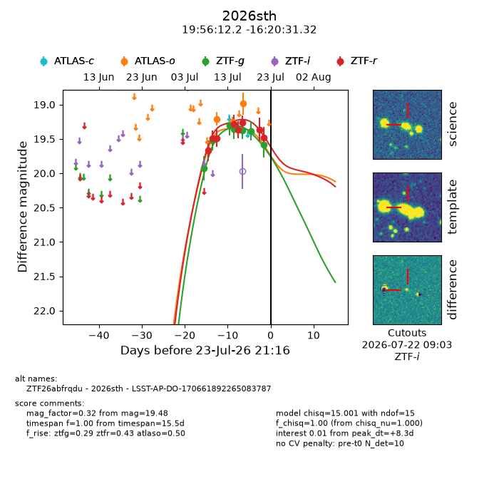
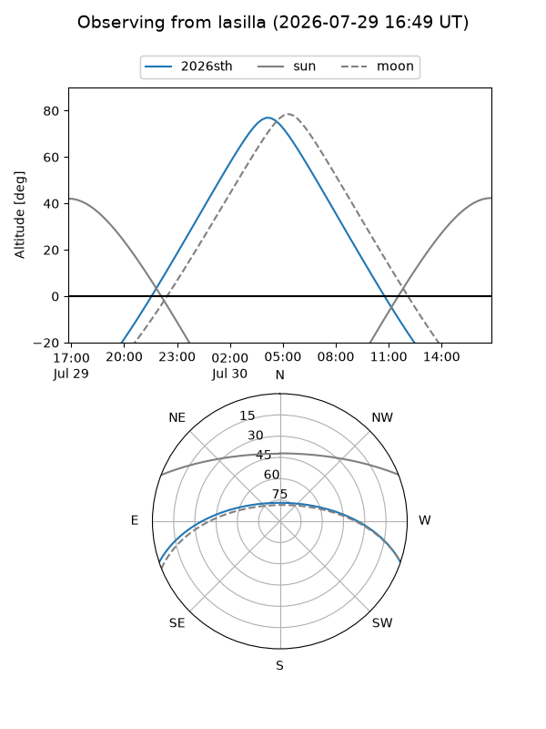
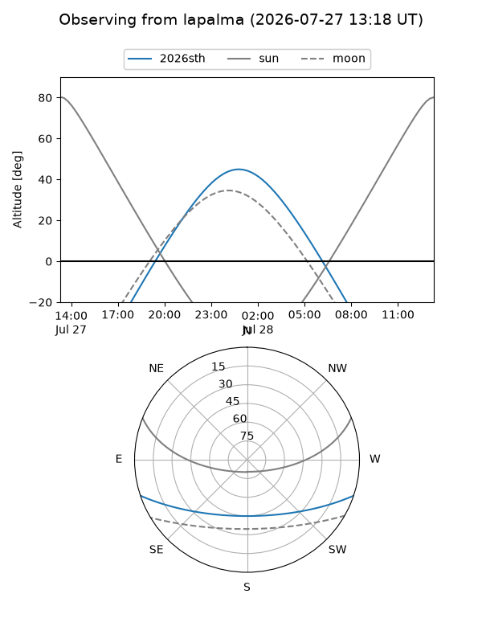
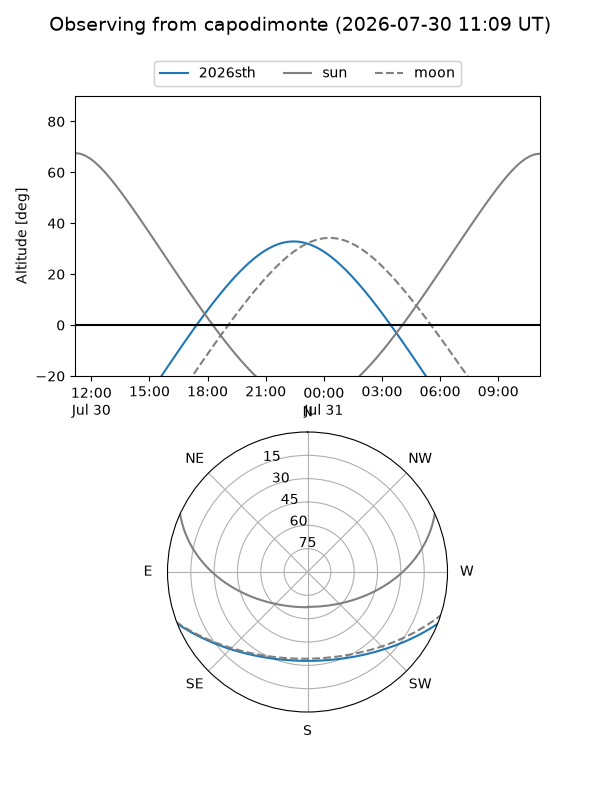
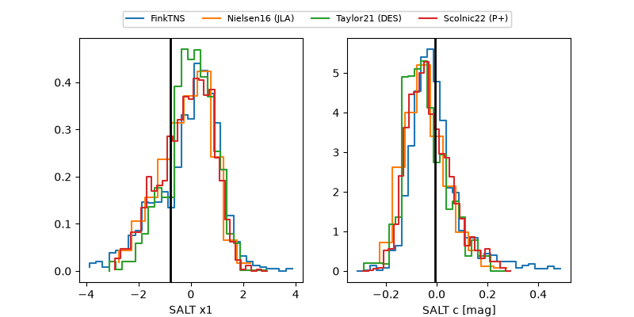

2026sth
Target 2026sth at 2026-07-23 21:19
Aliases and brokers:
FINK-ZTF: ztf.fink-portal.org/ZTF26abfrqdu
Lasair-ZTF: lasair-ztf.lsst.ac.uk/objects/ZTF26abfrqdu
ALeRCE-ZTF: alerce.online/object/ZTF26abfrqdu
YSE-PZ: ziggy.ucolick.org/yse/transient_detail/2026sth
TNS name: wis-tns.org/object/2026sth
Direct TNS query: direct search
alt names
ZTF26abfrqdu (ztf,fink_ztf)
2026sth (tns,yse)
LSST-AP-DO-170661892265083787 (iau_lsst)
Coordinates:
equatorial (ra, dec) = 299.0509,-16.34203
equatorial (HMS+DMS) = 19:56:12.21,-16:20:31.32
galactic (l, b) = (24.9996,-21.49650)
Flags:
TNS type: nan
peak dt: +8.3
Photometry:
last atlaso=18.98, ztfg=19.59, ztfr=19.48
3 atlaso, 8 ztfg, 8 ztfr detections
Lightcurve

Visibility



Additional plots
